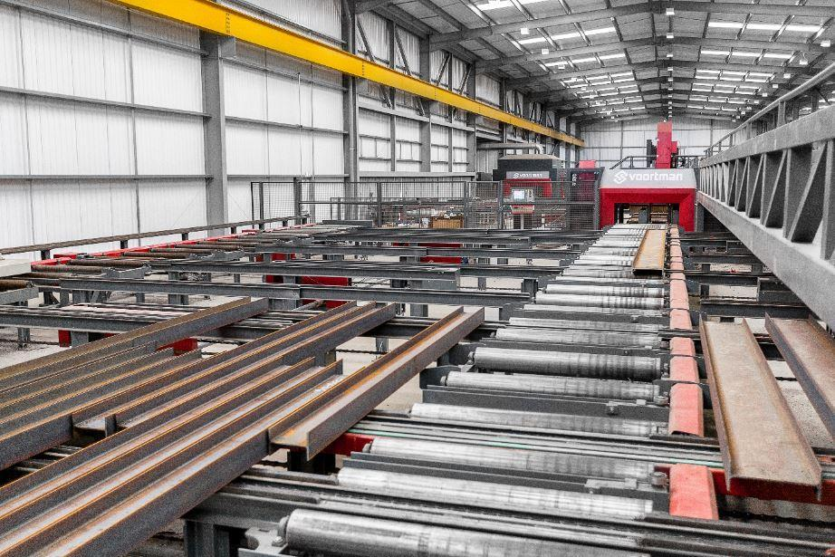

← Back to Index
Example 43 (Slide 161)
Merco Inc., a machinery builder in Louisville, KY, is considering making an investment of
$1,250,000 in a complete structural-beam-fabrication system. The increased productivity resulting
from the installation of the drilling system is central to the justification. The net investment cost as
well as savings are as follows:
161
Describing Project Cash Flows
Additional example
•
Cash
inflows:
Increased
annual
revenue:
$792,000
Projected
annual
net
savings
in
labor:
$294,000
Projected after-tax salvage value at the end of year 15: $80,000
•
Cash
outflows:
Project
investment
cost:
$1,250,000
Projected
increase
in
annual
maintenance
cost:
$128,500
Projected increase in corporate income taxes: $226,000
